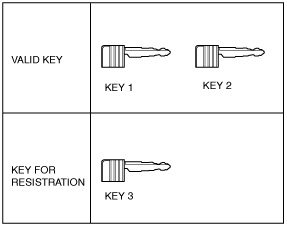
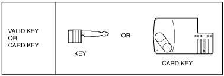
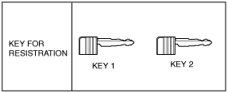
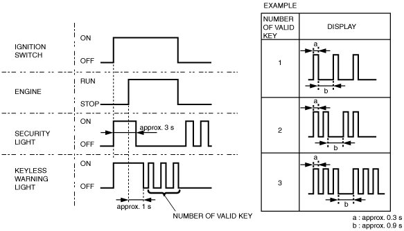

Workshop Manual ➭ BODY & ACCESSORIES ➭ SECURITY AND LOCKS ➭ IMMOBILIZER SYSTEM COMPONENT REPLACEMENT/KEY ADDITION AND CLEARING [WITH ADVANCED KEYLESS SYSTEM]
IMMOBILIZER SYSTEM COMPONENT REPLACEMENT/KEY ADDITION AND CLEARING [WITH ADVANCED KEYLESS SYSTEM]
id0914008050b2
• When performing the following procedures, the immobilizer resetting procedure using the M-MDS must also always be performed: “Keyless control module replacement”, “PCM replacement”, “Steering lock unit replacement”, “Keyless control module and PCM joint replacement”, “Keyless control module, PCM, and steering lock unit joint replacement”, and “Key ID number clearing”. The engine will not start unless all work is performed using the M-MDS.
• A card key that can start the engine is necessary for the key programming. If there is no card key that can start the engine, perform the key programming after the card key programming. (See CARD KEY ID CODE REGISTRATION [WITH ADVANCED KEYLESS SYSTEM].)
• There are two ways to add supplemental key: Using the M-MDS or using two keys that can start the engine to program.
• When replacing any of the immobilizer system component parts, adding/clearing keys, or performing other functions, refer to the following table and perform the applicable procedure (No.1 to 6).
• Verify that the room fuse is equipped.
|
Ref. No. |
Condition |
Items necessary for procedure (prepare before starting procedure) |
Cautionary notes |
|---|---|---|---|
|
1 |
Since two or more keys that can start the engine are necessary, make a spare key. Or program an additional key. |
• Programming key |
• The M-MDS is necessary for the additional key programming if “Customer spare key programming disable” is performed before the procedure using the M-MDS. In this case, perform No. 2. |
|
2 |
If there is only one key that can start the engine, make a spare key. If there is no key, program an additional key. |
• Programming key • M-MDS |
- |
|
3 |
Replacing the PCM only. |
• New PCM • Programmed card key or programmed key • M-MDS |
- |
|
4 |
Changing the additional key programming procedure. (Method for programming other keys using two keys that can start the engine is disabled.) |
• M-MDS |
• The additional key programming using No. 1 cannot be performed after the procedure. It is possible to restore the setting. For restoring the setting, the M-MDS is necessary. |
|
4 |
Changing the additional key programming procedure. Allows programming using two keys that can start the engine. |
• M-MDS |
• New vehicles have this setting. |
|
5 |
Clearing the programmed key ID number. |
• Programming keys (two or more) • M-MDS |
• Go to No.5 Resetting Procedure for the Immobilizer System when Replacing the related parts |
|
5 |
Replacing all the keys. (Steering lock unit is not replaced) |
• Programming keys (two or more) • M-MDS |
• Go to No.5 Resetting Procedure for the Immobilizer System when Replacing the related parts |
|
5 |
Replacing the steering lock unit. |
• New steering lock unit • Programmed card key • New keys (two or more) • M-MDS |
• Go to No.5 Resetting Procedure for the Immobilizer System when Replacing the related parts |
|
5 |
Replacing the keyless control module. |
• New keyless control module • Card key • Programming keys (two or more) • M-MDS |
• Go to No.5 Resetting Procedure for the Immobilizer System when Replacing the related parts |
|
5 |
Replacing the instrument cluster. |
• New instrument cluster • Card key • Programming keys (two or more) • M-MDS |
• Go to No.5 Resetting Procedure for the Immobilizer System when Replacing the related parts |
|
6 |
Program the keys(There is no programmed key or programmed card key) ) |
• Programming card key • Programming keys (two or more) • M-MDS |
- |
|
- |
Replacing the coil antenna. |
• New coil antenna |
• Immobilizer system resetting is not necessary. |
Caution• The following conditions may cause poor signal communication between the key and vehicle, resulting in the engine not starting or a key registration error. Do not perform any work under the following conditions:
― Placing the following items close to the key grip or contacting it.
• Spare keys
• Keys for other vehicles equipped with an immobilizer system
• Any metallic object
• Any electronic device, or any credit or other card with magnetic strips
• Do not place the following devices in the vehicle while programming, otherwise programming cannot be performed:
― M-MDS
― Personal computer
― Devices that can send/receive the radio waves
Note• The “valid key” used in this manual indicates the key that can start the engine.
• If the key adding, programming, clearing, and immobilizer system construction parts replacement are performed, verify that the all keys can start the engine within 5 s after the procedure.
• When verifying that the engine starts, wait at least 5 s or more before starting the engine using the next key.
• If the engine cannot be started using a programmed key, repeat the procedure from the beginning.
• Do not start the engine unless indicated in the procedure. If the engine is started during the programming procedure, programming is stopped at that point. Repeat the procedure starting from the beginning if the engine is started before completion.
• Do not place the card key in the vehicle or bring it within approx. 1 m of the vehicle unless indicated in the procedure.
• Two or more key ID numbers must be programmed for the engine to start.
• A maximum of eight key ID numbers can be programmed for one vehicle. The M-MDS can be used to verify the number of key ID numbers programmed to a single vehicle.
• Do not select a M-MDS screen menu other than one indicated in the procedure.
Caution• Do not place the M-MDS in the vehicle while programming, otherwise programming cannot be performed.
1. Fully lower the door glass.
2. Connect the M-MDS to the DLC-2.
|
|
 e5u914aw4013
e5u914aw40133. Pull out the M-MDS cable from the door glass opening and set the M-MDS outside the vehicle.
Caution• Protect the cable and body contact area with a clean rag, otherwise they could be damaged.
No.1 Additional Key Programming Procedure (Using Two Valid Keys)
Caution• Do not place the following devices in the vehicle while programming, otherwise programming cannot be performed:
― Card key
― M-MDS
― Personal computer
― Devices that can send/receive the radio waves
Condition
• Have two or more valid keys.
Note• A maximum of eight keys can be programmed for one vehicle. If key programming is not successful and DTC 15 appears even though the procedure was performed properly, use the PID/data monitor function of the M-MDS and verify the number of keys that have been programmed.
• If eight keys have already been programmed, and it is necessary to program other keys, the previously programmed key ID numbers must first be cleared. To clear the key, refer to “No.3 PCM Replacement Procedure”.
|
 amxzzw00003969 |
1. Prepare key 3 for programming.
2. Start the engine using key 1.
3. Verify that the security light illuminates for approx. 3 s, and then goes out.
4. Turn the ignition switch to the LOCK position.
5. Using key 1, turn the ignition switch to the ON position.
6. Verify that the security light illuminates for approx. 3 s, and then goes out.
7. Using key 1, turn the ignition switch to the LOCK position within approx. 4 s after the security light goes out.
8. Remove key 1.
9. Repeat Steps 2—5 using key 2 instead of key 1.
10. Repeat Steps 5—8 using key 3 instead of key 1.
11. If additional keys need to be programmed, repeat Steps 1—10, and replace key 3 in Step 10 with the key to be programmed (key 4).
No. 2 Key Additional Programming Procedure (Using the M-MDS)
Condition
• There is only one valid key. Or, there is no valid key but there is a card key that can start the engine.
Note• A maximum of eight keys can be programmed for one vehicle. If key registration is not successful and DTC 15 appears even though the procedure was performed properly, use the PID/data monitor function of the M-MDS and verify the number of keys that have been programmed.
• If eight keys have already been programmed, and it is necessary to program other keys, the previously programmed key ID numbers must first be cleared. To clear the key ID number, refer to “No.3 PCM Replacement Procedure”.
1. Prepare key 1 for programming.
2. Start the engine using a valid key or card key.
Caution• Do not place the card key in the vehicle when starting the engine with the valid key, otherwise programming cannot be performed. If the engine is started with the card key, remove the card key from the vehicle after the engine is started.
3. Verify that the security light illuminates for approx. 3 s, and then goes out.
4. Turn the ignition switch to the LOCK position.
5. Connect the M-MDS to the DLC-2. (See M-MDS Connecting Procedure.)
6. Using key 1, turn the ignition switch to the ON position.
Note• Although the security light flashes and DTC 15 is displayed, this does not indicate an improper procedure. Continue to perform the procedure as indicated.
7. Select “Body/Security/PATS Function” from the M-MDS screen menu.
8. Select “Program Additional Ignition Key” from the M-MDS screen menu.
9. Perform the security access according to the directions on the M-MDS screen. (See SECURITY ACCESS PROCEDURE.)
Note• After selecting the above menu, “operation is successful” is displayed. At this point, the key that turned the ignition switch to the ON position is completely programmed.
• In this procedure, the necessary number of the keys are completely programmed. To finish the additional key programming, go to Step 11.
• If additional keys need to be programmed, go to the next step.
10. Perform procedure according to the directions on the M-MDS screen.
11. After verifying that the PATS function menu is displayed again on the M-MDS screen, select the “Exit (From This Menu)” to finish the M-MDS procedure.
12. After Step 10, wait 5 s or more, and then turn the ignition switch to the LOCK position.
No.3 PCM Replacement Procedure
Condition
• Prepare a valid key or a card key that can start the engine.
Caution• Before starting Step 1, complete the procedure for PCM replacement. (See PCM REMOVAL/INSTALLATION [L8, LF].)
|
 acxaaw00001328 |
1. Turn the ignition switch to the LOCK position.
2. Connect the M-MDS to the DLC-2. (See M-MDS Connecting Procedure.)
3. Using a valid key or card key, turn the ignition switch to the ON position.
Note• Although the security light remains illuminated and DTC 23 is displayed after approx. 1 min, this does not indicate an improper procedure. Continue to perform the procedure as indicated.
4. Verify that the keyless warning light illuminates for approx. 3 s, and then goes out.
5. Select “BODY/SECURITY/PATS functions” from the M-MDS screen menu.
6. Select “Parameter Reset” from the M-MDS screen menu.
7. Perform the security access according to the directions on the M-MDS screen. (See SECURITY ACCESS PROCEDURE.)
8. After verifying that the PATS function menu is displayed again on the M-MDS screen, select “Exit (From This Menu)” to finish the M-MDS procedure.
9. After Step 8, wait 5 s or more, and then turn the ignition switch to the LOCK position.
10. Turn the ignition switch to the ON position.
11. After verifying that the security light and keyless warning light illuminates for 3 s or more turn the ignition switch to the LOCK position.
12. Verify that the all keys can start the engine for 5 s or more after the procedure.
No. 4 Key Additional Programming Procedure Changing
Note• This procedure is performed for enabling/dibbling the “No.1 Additional Key Programming Procedure (Using Two Valid Keys)” setting.
• This procedure is possible when the vehicle is new, and when replacing the keyless unit with a new one.
• If “No.1 Additional Key Programming Procedure (Using Two Valid Keys)” is set to disable, the additional key programming can be only performed using the M-MDS preventing the forging of a spare key by using two keys that can start the engine. This function is for use by rental car agencies or other companies with vehicle fleets.
1. Using the key, turn the ignition switch to the ON position. (The key can be either the valid key or an unprogrammed key)
Note• Although the security light flashes and DTC 15 is displayed when an unprogrammed key is used, this does not indicate an improper procedure. Continue to perform the procedure as indicated.
2. Connect the M-MDS to the DLC-2.
3. Select “Body/Security/PATS Function” from the M-MDS screen menu.
4. Select “Customer spare key programming enable” or “Customer spare key programming disable” from the M-MDS screen menu. The key additional programming procedure is as follows according to the selected menu:
|
Setting |
Additional key programming procedure |
|
|---|---|---|
|
Method using two valid keys |
Method using the M-MDS |
|
|
Customer Spare Key Programming Enable |
– |
– |
|
Customer Spare Key Programming Disable |
× |
– |
– :Available
× :Unavailable
5. Perform the security access according to the directions on the M-MDS screen. (See SECURITY ACCESS PROCEDURE.)
6. After verifying that the PATS function menu is displayed again on the M-MDS screen, select “Finish (this menu)” to finish the M-MDS procedure.
7. After Step 6, wait 5 s or more and then turn the ignition switch to the LOCK position.
No.5 Resetting Procedure for the Immobilizer System when Replacing the related parts
Condition
• Carry out the M-MDS menu according to the following chart.
|
Priority ranking |
|||||
|---|---|---|---|---|---|
|
1 |
2 |
3 |
4 |
||
|
Replace parts |
M-MDS menu |
Ignition key code erase |
Parameter reset |
Program additional card key |
Steering lock unit programming |
|
Ignition key |
X |
||||
|
Ignition key cylinder |
X |
||||
|
Steering lock unit |
X |
X |
|||
|
Keyless control module |
X |
X |
X |
||
|
Instrument cluster |
X |
X |
|||
|
PCM |
X |
||||
|
 amxzzw00003970 |
1. Prepare two or more keys to be programmed after the key ID number is cleared.
2. Connect the M-MDS to the DLC-2. (See M-MDS Connecting Procedure.)
3. Using key 1, turn the ignition switch to the ON position.
4. Verify that the keyless warning light illuminates for approx. 3 s and then goes out.
5. Select “Body/Security/PATS Function” from the M-MDS screen menu.
6. Select “Ignition key code erase” from the M-MDS screen menu and perform the procedure according to the M-MDS screen.
7. Perform the security access according to the directions on the M-MDS screen. (See SECURITY ACCESS PROCEDURE.)
Caution• The M-MDS displays “At least two or more keys must be programmed”, however, do not perform the key programming and proceed to Step 8. If the procedure is not followed, the engine may not be started.
The key programming procedure is performed at Step 15—20.
8. Select “Parameter Reset” from the M-MDS screen menu.
9. Perform security access again as indicated on the M-MDS screen. (See SECURITY ACCESS PROCEDURE.)
10. Select the replaced part as indicated on the M-MDS screen.
• When replacing only the PCM: Select “PCM”.
• When replacing only the instrument cluster: Select “HEC”.
Note• At this time, do not select any other parts from the M-MDS screen menu.
11. Perform the ”Program additional card key”. (When replacing keyless control module) (See CARD KEY ID CODE REGISTRATION [WITH ADVANCED KEYLESS SYSTEM].)
12. Perform the ”Steering lock unit programming”. (When replacing keyless control module) (See STEERING LOCK UNIT ID CODE REGISTRATION [WITH ADVANCED KEYLESS SYSTEM].)
13. After verifying that the PATS function menu is displayed again on the M-MDS screen, select “Exit (From This Menu)” to finish the M-MDS procedure.
14. After Step 11, wait 5 s or more and then turn the ignition switch to the LOCK position.
15. Using key 1, turn the ignition switch to the ON position.
16. After verifying that the security light and keyless warning light illuminate for 3 s or more, turn the ignition switch to the LOCK position and remove key 1.
Note• Although the security light flashes and DTC 21 is displayed, this does not indicate an improper procedure. Continue to perform the procedure as indicated.
17. Using key 2, turn the ignition switch to the ON position.
18. Verify that the security light and keyless warning light illuminate for approx. 3 s, and then goes out.
19. After verifying that the security light goes out, turn the ignition switch to the LOCK position using key 2, and then remove key 2.
20. If additional keys need to be programmed, repeat Steps 15—16 with the additional key to be programmed being key 3. If the ignition switch is held in the ON position for 1 min or more, additional key programming according to Steps 18—19 will not be possible. If this occurs, refer to “No.1 Additional Key Programming Procedure (Using Two Valid Keys)” to program any additional keys.
21. Start the engine with key 1.
22. Verify that the security light and keyless warning light operate as follows:
• From the point when the ignition switch is turned to the ON position, the security light illuminates for approx. 3 s, and goes out.
• The keyless warning light illuminates when the ignition switch is turned to the ON position, and the light goes out after approx. 1 s, and then displays the number of the programmed keys.
|
 e6u914zw1026 |
23. After verifying that the keyless warning light goes out, turn the ignition switch to the LOCK position using key 1, and then remove the key.
24. Repeat Steps 22—23 using key 2 instead of key 1.
Note• Perform Steps 22—23 as well when three or more keys are to be programmed.
25. Start the engine using the card key.
Caution• Remove any key from the key cylinder.
26. Verify that the security light and keyless warning light operate as follows:
• From the point that ignition switch is turned to the ON position, the security light illuminates for approx. 3 s, and goes out.
• The keyless warning light illuminate when the ignition switch is turned to the ON position for approx. 1 min, and goes out.
27. After verifying that the keyless warning light goes out, turn the ignition switch to the LOCK position.
No.6 Key Programming Procedure (If there is no programmed key or programmed advanced key)
Condition
• Have two or more keys to be programmed.
• Have one or more card keys to be programmed.
1. Fully lower the driver-side door glass.
2. Connect the M-MDS to the DLC-2.
3. Pull out the M-MDS cable from the door glass opening and set the M-MDS outside the vehicle.
Caution• Protect the cable and body contact area with a clean rag, otherwise they could be damaged.
4. After the vehicle is identified, select the following items from the initialization screen of the M-MDS.
• When using the IDS (notebook PC)
1. Select “Body”.
2. Select “Security”.
• When using the PDS (pocket PC)
1. Select “Programming”.
5. Then, select items from the screen menu in the following order.
1. Select “PATS functions”.
2. Select “Card Key Code Erase”.
6. Security access begins and the M-MDS displays the “OUT-CODE”.
NoteWhen “OUT-CODE” is first displayed, turning the ignition switch from the LOCK to the ON position 5 times will change the “OUT-CODE”.
7. Input the “IN-CODE” that corresponds to the “OUT-CODE” displayed in the M-MDS screen.
8. Select “CARD KEY CLEARING” from the M-MDS screen menu.
9. Then, select the following items from the initialization screen of the M-MDS.
• When using the IDS (notebook PC)
1. Select “Body”.
2. Select “Security”.
• When using the PDS (pocket PC)
1. Select “Programming”.
10. Then, select items from the screen menu in the following order.
1. Select “PATS functions”.
2. Select “Program Additional Card Key”.
11. Security access begins and the M-MDS displays the “OUT-CODE”.
Note• When “OUT-CODE” is first displayed, turning the ignition switch from the LOCK to the ON position 5 times will change the “OUT-CODE”.
12. Input the “IN-CODE” that corresponds to the “OUT-CODE” displayed on the M-MDS screen.
13. Select “CARD KEY PROGRAMMING” from the M-MDS screen menu.
Note• After Step 13 is completed and the card key programming is activated, the door lock actuator operates to lock, and then operates to unlock.
14. Press the unprogrammed card key UNLOCK button twice.
Note• After Step 14 is completed and the card key is programmed, the door lock actuator operates to lock, and then operates to unlock.
15. If programming more card keys, remove the supplementary key once, and then repeat the procedure from Step 12 by following the instructions on the M-MDS screen.
Caution• Do not place the card key in the vehicle when starting the engine with the valid key, otherwise programming cannot be performed. If the engine is started with the card key, remove the card key from the vehicle after the engine is started.
16. After verifying that the PATS function menu is displayed again on the M-MDS screen, select “Exit (From This Menu)” to finish the M-MDS procedure.
17. After Step 16, wait 5 s or more and then turn the ignition switch to the LOCK position.
18. Using key 1, turn the ignition switch to the ON position.
19. After verifying that the security light and keyless warning light illuminate for 3 s or more, turn the ignition switch to the LOCK position and remove key 1.
Note• Although the security light flashes and DTC 21 is displayed, this does not indicate an improper procedure. Continue to perform the procedure as indicated.
20. Using key 2, turn the ignition switch to the ON position.
21. Verify that the security light and keyless warning light illuminate for approx. 3 s, and then goes out.
22. After verifying that the security light goes out, turn the ignition switch to the LOCK position using key 2, and then remove key 2.
23. If additional keys need to be programmed, repeat Steps 18—19 with the additional key to be programmed being key 3. If the ignition switch is held in the ON position for 1 min or more, additional key programming according to Steps 21—22 will not be possible. If this occurs, refer to “No.1 Additional Key Programming Procedure (Using Two Valid Keys)” to program any additional keys.
24. Start the engine with key 1.
25. Verify that the security light and keyless warning light operate as follows:
• From the point when the ignition switch is turned to the ON position, the security light illuminates for approx. 3 s, and goes out.
• The keyless warning light illuminates when the ignition switch is turned to the ON position, and the light goes out after approx. 1 s, and then displays the number of the programmed keys.
|
e6u914zw1026 |
26. After verifying that the keyless warning light goes out, turn the ignition switch to the LOCK position using key 1, and then remove the key.
27. Repeat Steps 25—26 using key 2 instead of key 1.
Note• Perform Steps 25—26 as well when three or more keys are to be programmed.
28. Start the engine using the card key.
Caution• Remove any key from the key cylinder.
29. Verify that the security light and keyless warning light operate as follows:
• From the point that ignition switch is turned to the ON position, the security light illuminates for approx. 3 s, and goes out.
• The keyless warning light illuminate when the ignition switch is turned to the ON position for approx. 1 min, and goes out.
30. After verifying that the keyless warning light goes out, turn the ignition switch to the LOCK position.